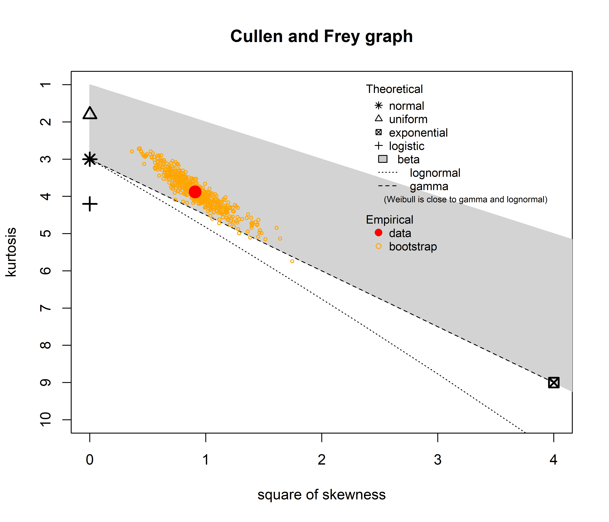

Generalised mixed-effect models
If you‚Äôve been following our statistical journey, you‚Äôre already familiar with our adventures in linear models and the exciting world of linear mixed-effect models!!! Now it‚Äôs time to level UP our statistical toolkit with something even MORE POWERFUL: Generalised Linear Mixed-Effects Models (GLMMs)!!! üéâ
In this tutorial, we’ll tackle those variables that just WON’T behave normally! Our focus will be on Reaction Time!!! Remember that eye-tracking dataset we’ve been playing with? It doesn’t just have Looking Time—but also saccadic reaction times we’ve been ignoring! These reaction times indicate how quickly participants directed their gaze to the stimuli when they appeared on screen.
Before diving in, let’s remember: linear models assume our data follows a normal (Gaussian) distribution. But reaction times often don’t play by these rules - they tend to be right-skewed with a lower bound (you can’t have negative reaction times!).
Prepare the data
Let’s start by importing the packages we need, the dataset and fixing some of the variables we will need.
Step one in ANY statistical analysis: look at your data! Let’s create a histogram with a density curve to see what we’re working with:
# Distribution with histograma and density
ggplot(df, aes(x = ReactionTime)) +
geom_histogram(aes(y = ..density..),bins = 30, fill = "#00b3b3", color = "black") +
geom_density(lwd = 1.2)+
theme_classic(base_size = 20)+
scale_x_continuous(breaks = seq(100, 800, 100))Notice something interesting? Our reaction time data is:
Right-skewed: Most values cluster on the left with a long tail to the right
Bounded: Nothing below ~200ms (makes sense - humans can’t respond faster than a certain limit!)
Definitely not normal: That bell-shaped curve? Nowhere to be found!
Now that we’ve looked at the overall distribution, let’s use violin plots and boxplots to compare our experimental conditions. These visualization tools are SUPER helpful because violin plots show us the full distribution shape for each condition while boxplots reveal the median, quartiles, and potential outliers. Together, they give us a complete picture of how our data behaves across conditions!
ggplot(df, aes(x = Event, y = ReactionTime)) +
geom_violin(aes(fill = Event), alpha = .5, color = 'transparent') +
geom_boxplot(alpha = 0.8, outlier.color = "darkred", width = .2, lwd = 1.2, outlier.size =4) +
scale_fill_manual(values = c('NoReward' = '#4A6274', 'Reward' = '#E2725A')) +
theme_classic(base_size = 20)+
theme(legend.position = 'bottom')These plots confirm our suspicions: the distribution is positively skewed in both conditions. We have some potential outliers (those red dots above the boxplots). Sooo what does this mean?? Well that Fitting a linear model won’t probably work in this context.
You don’t believe me???? Let’s just do it then…
Linear model
Following what we have learned in the previous tutorial we will fit a linear mixed effect model including a random intercept and random slope:
mod_lm <- lmer(
ReactionTime ~ StandardTrialN * Event + (1 + StandardTrialN | Id),
data = df
)Now, before even looking at the summary, let’s check whether the model follows the model assumptions. For that, we can use the function check_model() as we explained in the tutorial on linear models:
check_model(mod_lm)
This does not look too great. The linearity is not really flat…it seems U shaped. The homogeneity of variance as well! In addition we have influential observations (red outliers) and also the normality of residuals is not too great!!
However, the plot I want you to focus on actually is the first one, the posterior predictive check. Do you note anything weird?? As you can see, the model believes there are values below 200ms…but that as we saw earlier is IMPOSSIBLE!! No participant can respond that quickly in our dataset!
All these indications and incoherences tell us that the model is fitting poorly!!! Our linear model is struggling to capture the true nature of reaction time data. The model is trying to force our non-normal data into a normal distribution, and it’s clearly not working!
Finding a better family
So what’s the solution to this mess? If normal distributions don’t work for our data, we need to find a distribution family that better matches reaction times! This is exactly where Generalized Linear Mixed Models (GLMMs) come to the rescue - they allow us to specify different distribution families beyond just Gaussian.
But which distribution should we use? The more you get familiarised with distributions, the more you will learn to recognise them. But since we’re not black belt of statistics yet, let’s use the Cullen and Frey graph instead! For this, we will use the fitdistrplus package:
library(fitdistrplus)
# first we need to remove NAs:
RTs = as.vector(na.omit(df$ReactionTime))
# then we can plot
descdist(RTs, discrete = FALSE, boot = 500)
summary statistics
------
min: 197.6241 max: 847.4415
median: 343.4964
mean: 365.1186
estimated sd: 109.9071
estimated skewness: 0.9530788
estimated kurtosis: 3.88081 The Cullen and Frey graph reveals which distribution best matches our data by plotting skewness against kurtosis. Looking at our reaction time data (red dot), we can immediately see it falls far from the normal distribution (asterisk) and instead sits near both the gamma (dashed line) and lognormal (dotted line) distributions, within the gray beta distribution area. The yellow circles represent bootstrap samples that help us assess uncertainty in our estimate. Since these bootstrap points tend to closely follow the gamma distribution line, we have strong evidence to select gamma as our distribution family! This explains why our linear model (which assumes normality) performed so poorly and gives us a clear direction for building a more appropriate model.
Beware! this plot only shows 7 or 8 distributions, and many more exist! For example, do you know what a bernoulli or a binary distribution are? If not we advise you check out https://distribution-explorer.github.io/index.html
Generalized Model
Now that we know that our data is not normally distributed and we should try a Gamma distribution, we can update our mixed effect model, making it generalised! It is super simple!!!
All this means is that we specify a distribution different from a gaussian and instead of using lmer() we switch to glmer()
You might have noticed we added link = “log” in our model: that’s a link function! A link function puts your independent variables on the right scale for your data. For a Gamma model, we often use a log link because our outcome can only be positive. By taking the exponent of the independent variables and their beta coefficients, the predicted values are always above zero—perfect for modeling things like reaction times or any strictly positive measure.
Now that we have run the model, let’s do our checks:
check_model(mod_gamma)
Look at our diagnostic plots now - there is improvement!!
First and most importantly, our posterior predictive check is now properly aligned with reality. The model’s predictions respect the natural lower boundary of our reaction time data and follow the actual distribution shape much more faithfully. The influential observations plot shows we’ve eliminated those problematic outliers that were throwing off our linear model. By using a distribution that naturally accommodates right-skewed data, points that seemed extreme before are now well within expectations.
The homogeinity of variance and unifromity of residuals could definetly be better…but remember, it’s probably impossible to find a model that fits your data perfectly!!! However, we can get much closer to reality by using what we KNOW about our data - like the fact that reaction times are skewed and never go below 200ms. This knowledge helped us choose the Gamma distribution with a log link, which naturally respects these constraints.
That’s the real power of GLMMs!!! They let us work WITH our data’s natural properties instead of trying to force everything into a normal distribution box where it doesn’t belong!!!
As you may have realized, some of the assumption plots are different between linear models and generalized linear models. This is expected as they have different assumptions and ways to check them!
For example, the most noticeable difference is that GLMs don’t need to follow linearity assumptions like regular linear models do! The check_model() function is smart enough to select the tests and plots needed for your specific model type!! So you don’t have to struggle too much changing them every time you switch between model types. This makes our lives so much easier - just fit your model and let check_model() handle the appropriate diagnostics automatically!
Summary
Once we are confident that the assumptions are respected, we can interpret the results:
summary(mod_gamma)Generalized linear mixed model fit by maximum likelihood (Laplace
Approximation) [glmerMod]
Family: Gamma ( log )
Formula: ReactionTime ~ StandardTrialN * Event + (1 + StandardTrialN | Id)
Data: df
AIC BIC logLik deviance df.resid
6181.1 6217.0 -3082.5 6165.1 652
Scaled residuals:
Min 1Q Median 3Q Max
-2.10383 -0.55231 0.00207 0.56421 2.67485
Random effects:
Groups Name Variance Std.Dev. Corr
Id (Intercept) 0.006482 0.08051
StandardTrialN 0.003207 0.05663 0.26
Residual 0.007262 0.08522
Number of obs: 660, groups: Id, 20
Fixed effects:
Estimate Std. Error t value Pr(>|z|)
(Intercept) 5.442146 0.072155 75.423 < 2e-16 ***
StandardTrialN -0.283501 0.038504 -7.363 1.8e-13 ***
EventReward 0.446262 0.006024 74.081 < 2e-16 ***
StandardTrialN:EventReward 0.200902 0.006031 33.311 < 2e-16 ***
---
Signif. codes: 0 '***' 0.001 '**' 0.01 '*' 0.05 '.' 0.1 ' ' 1
Correlation of Fixed Effects:
(Intr) StndTN EvntRw
StandrdTrlN 0.315
EventReward -0.062 -0.059
StndrdTN:ER -0.032 -0.112 0.345OMG, these results are AMAZING!!! üéâ Look at that interaction between trial number and Event - it‚Äôs significant! This is super important to note because when we have significant interactions, we need to focus on understanding THOSE rather than looking at the main effects in isolation.
The interaction tells us that the effect of trial number on reaction time DEPENDS on which event condition we’re in! To really grasp what this pattern means in practical terms, let’s visualize this interaction:
Code
is_pred <- estimate_expectation(mod_gamma, include_random=F)
# 2. Plot the interaction between StandardTrialN and Event
ggplot(is_pred, aes(x = StandardTrialN,
y = Predicted,
color = Event,
group = Event)) +
geom_line(size = 1.2) +
geom_ribbon(aes(ymin = Predicted - SE, ymax = Predicted + SE, fill = Event),
alpha = 0.2, color = "transparent") +
labs(y = "Reaction Time (Predicted)", x = "Scaled Trial #") +
scale_color_manual(values = c('NoReward' = '#4A6274', 'Reward' = '#E2725A')) +
scale_fill_manual(values = c('NoReward' = '#4A6274', 'Reward' = '#E2725A'))+
theme_classic(base_size = 16)Reaction times decrease much more across trials for the reward than for the no reward condition! However, we don’t have a complete picture yet. For example, we do not know whether the decrease in reaction times across trials is significant only for the reward condition or also for the no reward condition. To find out, we can estimate the slopes as we did in the previous tutorial: ModelEstimates.qmd
estimate_slopes(mod_gamma, trend = 'Event', by = 'StandardTrialN')Estimated Marginal Effects
StandardTrialN | Comparison | Slope | SE | 95% CI | t | p
---------------------------------------------------------------------------------------
-1.65 | Reward - NoReward | 46.99 | 5.41 | [ 36.39, 57.59] | 8.69 | < .001
-1.28 | Reward - NoReward | 72.46 | 6.13 | [ 60.45, 84.47] | 11.83 | < .001
-0.92 | Reward - NoReward | 95.17 | 7.03 | [ 81.39, 108.96] | 13.53 | < .001
-0.55 | Reward - NoReward | 115.44 | 8.13 | [ 99.50, 131.38] | 14.19 | < .001
-0.18 | Reward - NoReward | 133.60 | 9.53 | [114.92, 152.29] | 14.01 | < .001
0.18 | Reward - NoReward | 149.96 | 11.31 | [127.79, 172.14] | 13.25 | < .001
0.55 | Reward - NoReward | 164.78 | 13.50 | [138.31, 191.25] | 12.20 | < .001
0.92 | Reward - NoReward | 178.29 | 16.09 | [146.75, 209.82] | 11.08 | < .001
1.28 | Reward - NoReward | 190.68 | 19.04 | [153.36, 228.00] | 10.01 | < .001
1.65 | Reward - NoReward | 202.11 | 22.31 | [158.39, 245.83] | 9.06 | < .001
Marginal effects estimated for Event[add with same structure as in previous tutorial]
Although we’ve been focusing on the main effects, remember that we also had random intercepts and slopes in our model! We can have a look at the random effects as well:
Code
is_pred_random = estimate_expectation(mod_gamma, include_random =T)
ggplot(is_pred_random, aes(x= StandardTrialN, y= Predicted, color= Id, shape = Event))+
geom_point(data = df, aes(y= ReactionTime, color= Id), position= position_jitter(width=0.2))+
geom_line()+
geom_ribbon(aes(ymin=Predicted-SE, ymax=Predicted+SE, fill = Id),color= 'transparent', alpha=0.1)+
labs(y='Reaction time', x='# trial')+
theme_classic(base_size = 20)+
theme(legend.position = 'none')+
facet_wrap(~Event)The variability is impressive! For example, looking at the no reward condition, we can see that Reaction times are getting slower over time for some infants, but they are getting faster for others! These participants are probably loosing interest in the no reward condition, because they learn across time that nothing interesting is going to appear on the screen after the cue! It’s also really interesting to see how, from the group level estimates, it seemed that the no reward effect was simply weaker than the reward effect, while there’s something more going on: there seem to be more variability in the no reward condition, with a subgroup of infants being especially uninterested in this specific condition only!
Aren’t generalised mixed-effect models pretty cool!?? We get to pick the distribution that better resembles the data and we get to model random effects, and these things really improve the fit of our model! We often get to have stronger main effects (which is very often the main thing we are interested in) and we get the insane bonus of looking at individual differences and unique patterns that we would otherwise completely miss!
We hope you’ll get to use GLMMs a lot in your research, and that they will help you find super cool results just like we did here!!!!